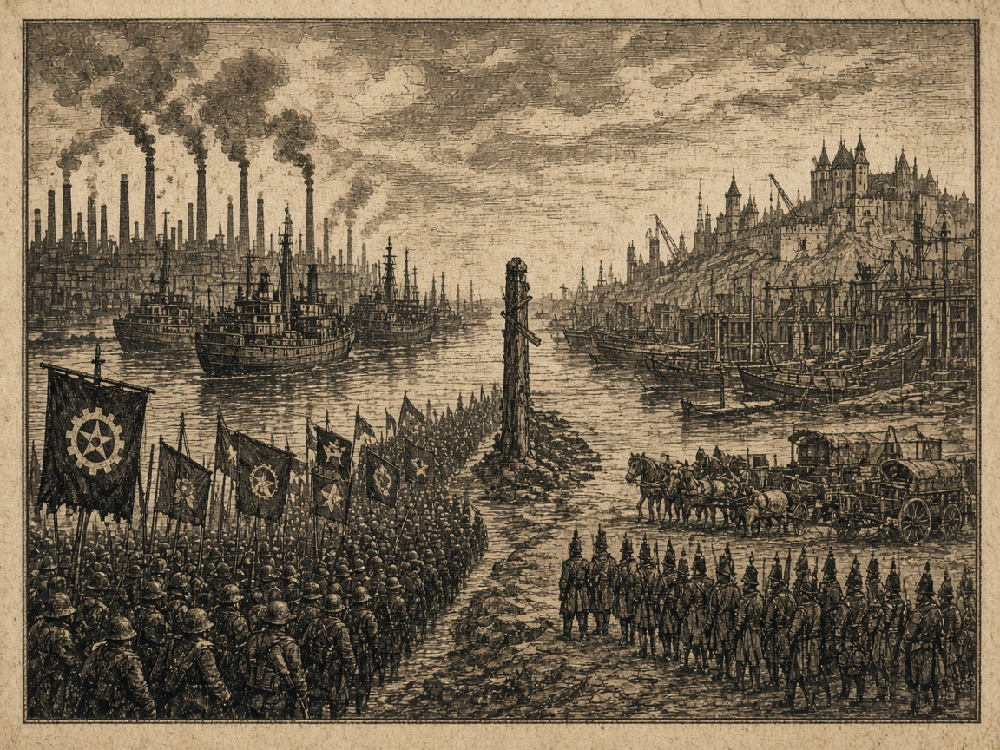
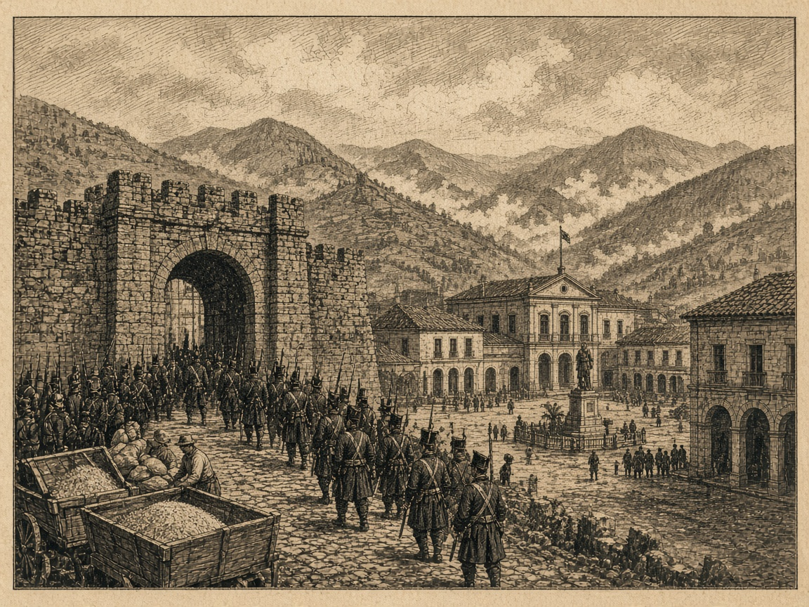
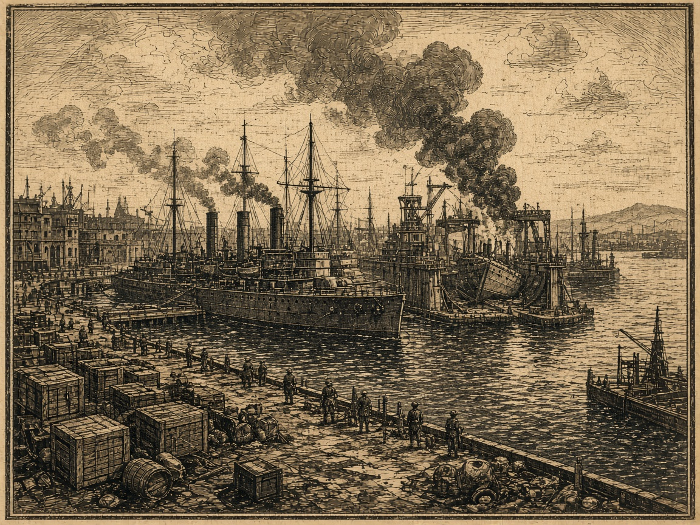

なのです主義人民共和国対白波王国戦争勃発
控えどおり第215期に開戦 なのです損害4,700 白波損害4,600 白波は三正面へ

【総合部】第215期、なのです主義人民共和国対白波王国の戦争が始まった。第211期に予告された宣戦控えどおりの開戦である。なのですは攻撃側。公報損害はなのです四千七百人、白波四千六百人。白波はチェス＝シロバキア共和国・泰平天国に加え、なのですとも戦う三正面となった。詳報は2面。


泰平、テキスタン首都近傍を占領 スルガ軍港もオリョルッル領へ
泰平天国はテキスタン共和国の大都市（34,13）と町（34,14）を占領し、食糧を徴発した。首都テキシャ（36,14）に隣接する地点である。公報損害は泰平三千三百人、テキスタン八千九百人。スルガの軍港（80,27）はオリョルッル王国の占領下となった。藍岬はカペレナ戦で損害一万千五百人。火災二十三件・九万二千四百人。国特集は9面のカペレナ王国。
なのですは四正面、白波は三正面を抱えた。なのですの人口は白波の約八・六倍、兵力は約四倍に達する。初日の損害は互角でも、長期戦になれば補充と輸送の差が前線へ出る。白波は盟主としてテキスタンとの連絡を保ちながら、各戦線へ艦隊と兵を割り振ることになる。
各地の占領も補給をめぐる争いを映す。泰平はテキスタンの大都市と町から計五万九千四百トンの食糧を奪い、オリョルッルはスルガの軍港を押さえた。兵力の数字だけでなく、倉庫と港を誰が使うかが次期の戦いを左右する。